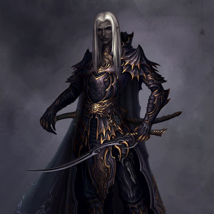

Elfes Obscurs
Les rois des brigands...

Description
Les Elfes Obscurs sont l'autre clan des Elfes, ces derniers vivent dans les Grottes d'Asteros et se sont mis à vivre du pillage afin de survivre. Ils se démarquent par leur peur oreilles pointues et leur peau sombre.
Ce sont des êtres vivants ayant une bonne vue et un talent à la dague.
Attributs de Race
- Un don pour le camouflage et les déplacements discrets.
- Un bon maniement de la dague.
- Une ouïe surdéveloppée.
Histoire
Depuis la séparation des deux clans d'Elfes, les Elfes obscurs se sont associés avec la guilde des assassins en vivant de la chasse aux primes et du pillage. Les Elfes obscurs sont cependant moins nombreux que les Elfes lumineux à cause de la guerre civile. Ils vouent ainsi une certaine haine envers le clan des Elfes lumineux.
Espérance de Vie
500 ans